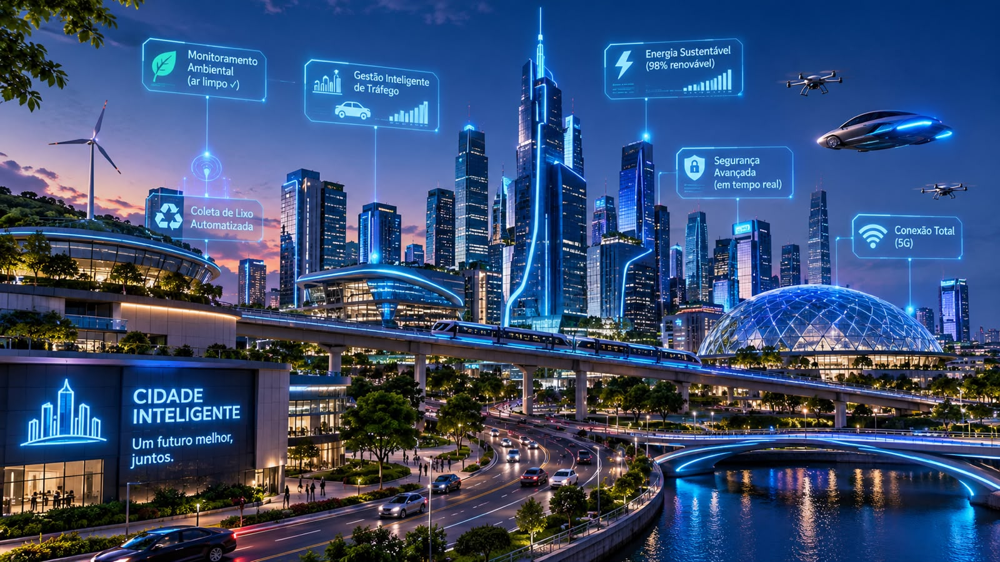
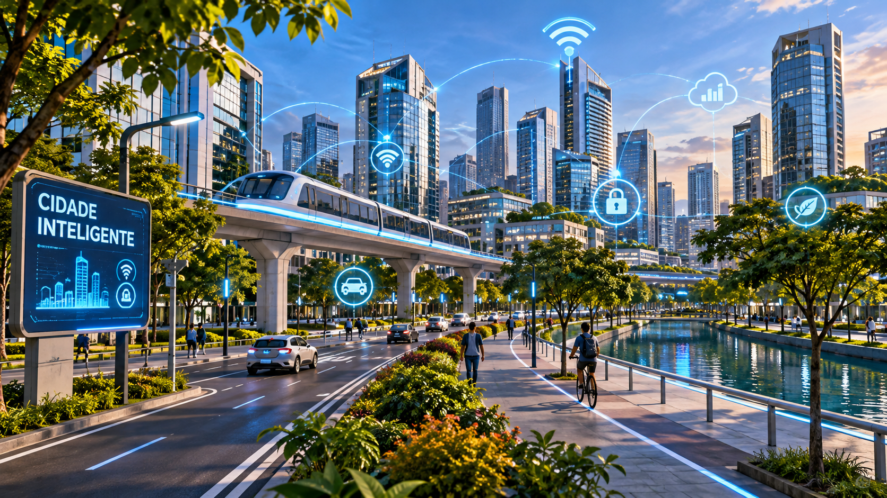
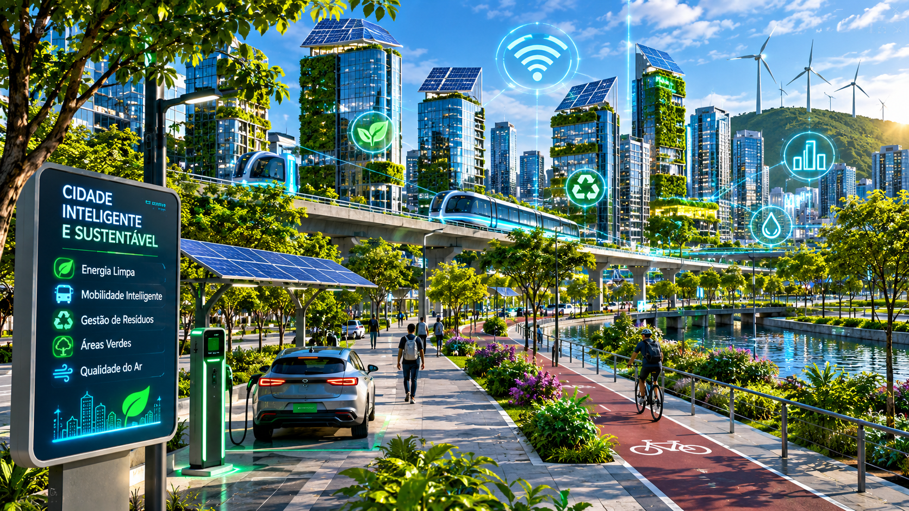
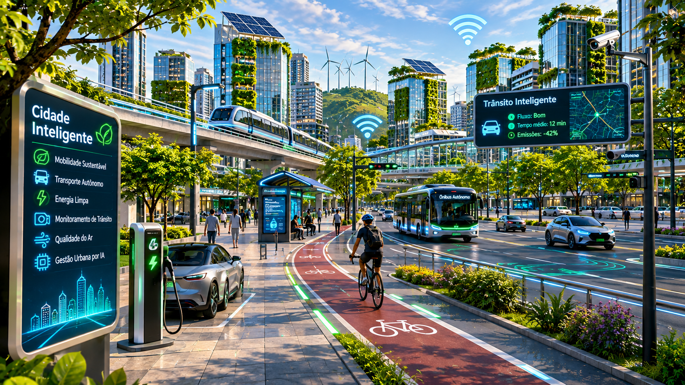

Cidades Inteligentes
Arte gerada por Inteligência Artificial
1. Apresentação da Obra
Esta obra representa o conceito de Cidades Inteligentes, também conhecidas como Smart Cities. A proposta é mostrar como a tecnologia pode transformar os espaços urbanos, criando cidades mais conectadas, sustentáveis, eficientes e seguras.
A imagem foi desenvolvida com o auxílio do ChatGPT (OpenAI). Durante a atividade, foram realizados três refinamentos para melhorar a representação visual da cidade.
2. Processo de Criação
O processo começou com um comando simples, chamado prompt. Depois, foram acrescentadas novas características para tornar a imagem mais detalhada e próxima da ideia planejada.
Etapa 1 - Prompt inicial
Prompt utilizado:
"Gere uma imagem de uma cidade inteligente gerada por IA."

Objetivo: criar uma primeira representação de uma cidade inteligente, sem especificar muitos detalhes.
Resultado: essa imagem serviu como ponto de partida para os refinamentos seguintes.
Etapa 2 - Primeiro refinamento
Direção do refinamento:
Desenvolver uma cidade futurista com edifícios modernos, infraestrutura conectada e tecnologias digitais integradas.

O que mudou: a imagem passou a destacar prédios modernos, sistemas digitais, símbolos de conexão e infraestrutura tecnológica.
Por que foi alterado: para mostrar melhor como diferentes tecnologias podem funcionar juntas dentro de uma cidade inteligente.
Esta etapa registra a direção utilizada no refinamento. O texto literal do comando de geração não foi preservado.
Etapa 3 - Segundo refinamento
Prompt utilizado:
"Gere uma imagem realista de uma cidade inteligente futurista, com edifícios modernos e infraestrutura digital conectada. Acrescente painéis solares nos prédios, jardins verticais, áreas verdes, sistemas de energia limpa e tecnologias sustentáveis. Utilize tons de azul e verde para representar a integração entre inovação tecnológica e preservação ambiental."

O que mudou: foram acrescentados painéis solares, jardins verticais, turbinas eólicas e mais áreas verdes.
Por que foi alterado: para representar a preocupação com o meio ambiente e mostrar que uma cidade inteligente também precisa ser sustentável.
Etapa 4 - Terceiro refinamento
Prompt utilizado:
"Gere uma imagem realista e detalhada de uma cidade inteligente futurista, com edifícios modernos, infraestrutura digital conectada, painéis solares, jardins verticais e áreas verdes. Acrescente veículos elétricos, ônibus autônomos, trens modernos, ciclovias inteligentes e estações de carregamento elétrico. Mostre tecnologias integradas que organizam o trânsito e melhoram a mobilidade urbana. Utilize tons de azul e verde, com iluminação natural, criando uma cidade moderna, sustentável, organizada e visualmente harmoniosa."

O que mudou: foram destacados ônibus autônomos, veículos elétricos, ciclovias, trens modernos e sistemas de monitoramento do trânsito.
Por que foi alterado: para mostrar como a tecnologia pode melhorar a mobilidade urbana, facilitar os deslocamentos e contribuir para a redução da poluição.
3. Resultado Final
A imagem escolhida como resultado final foi a do terceiro refinamento, pois reúne os principais elementos desenvolvidos durante o processo: conectividade, sustentabilidade, energia limpa e mobilidade inteligente.
Ferramenta utilizada: ChatGPT (OpenAI).
4. Reflexão sobre a Obra
O resultado final ficou mais próximo da intenção planejada. No início, a proposta era apenas representar uma cidade inteligente. Com os refinamentos, foi possível desenvolver uma imagem mais completa, mostrando tecnologias conectadas, preocupação ambiental e novas formas de transporte.
A principal diferença entre a imagem inicial e a final está na quantidade de detalhes e na integração dos elementos. A última versão apresenta uma cidade que combina inovação, sustentabilidade e mobilidade urbana.
A atividade mostrou que os prompts são importantes para orientar a Inteligência Artificial. Quanto mais claras e específicas são as instruções, maiores são as possibilidades de obter uma imagem próxima do que foi imaginado. Também percebemos que a IA pode representar ideias futuristas, mas isso não significa que todas as tecnologias apresentadas já existam daquela forma na realidade.